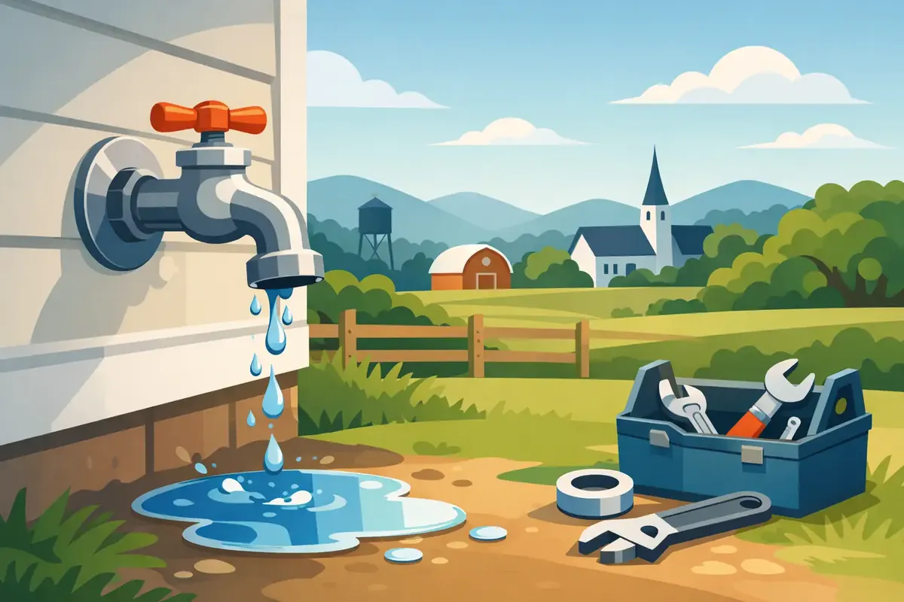

A small drip from an outdoor spigot can seem easy to ignore, especially when the faucet is tucked beside the garage or behind a flower bed. But an outside faucet leak in Woodbury, TN can waste a surprising amount of water, saturate the soil around your home, and become much more serious when freezing weather arrives. The right response depends on where the leak is coming from and whether water is still flowing after the faucet is turned off.
How to Spot an Outside Faucet Leak in Woodbury TN
Start by turning the faucet handle fully off, then dry the spout and the area around it with a towel. Watch it for a few minutes. Water dripping from the end of the spout usually points to a worn washer, cartridge, or valve seat inside the faucet. This is often a repairable issue, but it should not be put off for months.
Water appearing around the handle is different. A loose packing nut or failing packing material may be allowing water to escape around the stem. In some cases, a careful tightening of the packing nut can slow or stop the leak. Tighten only slightly. Overtightening can make the handle difficult to operate or damage an older fixture.
The most concerning leaks happen at the wall. If water is running from the connection where the faucet enters the siding, brick, or foundation, the problem may be behind the exterior wall. A split pipe, loose connection, or failed frost-free faucet can let water travel into places you cannot see. That calls for prompt professional service.
Why a Leaking Outdoor Faucet Deserves Attention
An outdoor faucet is exposed to Tennessee heat, storms, hard use, and winter temperature swings. Hoses left connected during a freeze are especially risky. Even a frost-free faucet can freeze when a hose traps water inside the fixture, allowing ice to expand into the pipe within the wall.
The visible drip is not always the full story. Water soaking the ground near your home can contribute to erosion, muddy areas, and moisture against the foundation. A hidden leak inside an exterior wall can damage insulation, drywall, framing, and flooring before it becomes obvious indoors.
There is also the water bill. A steady drip may not look dramatic, but continuous water loss adds up. If your water bill rises without a clear reason, inspect exterior faucets along with toilets, irrigation connections, and water-using appliances.
What You Can Safely Check First
Before taking anything apart, remove any attached hose, splitter, timer, or spray nozzle. These accessories can hide a leak or prevent a frost-free faucet from draining properly. Turn the faucet on briefly, then turn it off and see whether the dripping changes.
If your home has an interior shutoff valve for the outdoor faucet, locate it before an emergency occurs. It is often near the water heater, in a crawl space, basement, utility room, or mechanical closet. Closing that valve can isolate the outdoor line while keeping water available in the rest of the house.
You can also check your water meter. Make sure no water is being used inside or outside, then watch the leak indicator or low-flow dial. If it continues moving, water is likely being used somewhere on the property. An outdoor faucet leak may be the cause, but a hidden plumbing leak is another possibility.
Avoid forcing a stuck handle, digging into a wall, or repeatedly cranking on an old shutoff valve. Those actions can turn a manageable repair into a broken pipe or a larger water event.
When to Shut the Water Off
Shut off the faucet's dedicated supply valve if water continues running from the spout, handle, or wall connection and you cannot control it at the fixture. If you cannot find or operate the local shutoff, use the home's main water shutoff valve. Every homeowner and property manager should know where that valve is and verify that it works before a plumbing emergency.
Call for urgent help when water is spraying, pooling quickly against the home, leaking inside a wall, or appearing indoors near the outdoor faucet location. A leak after a hard freeze also deserves immediate attention. Waiting can allow a cracked pipe to release more water as temperatures warm.
For a commercial property, a leaking hose bib can create slip hazards, disrupt operations, and expose exterior plumbing to avoidable damage. Isolating the line quickly protects the building while a repair is arranged.
Common Repairs and What They Depend On
A drip from the spout may need a new washer, cartridge, stem assembly, or valve seat. The exact repair depends on the faucet's make, age, and condition. Older compression-style faucets can often be rebuilt, while some newer fixtures are better served by replacing an internal cartridge.
A leak around the handle may respond to packing adjustment or new packing material. If the stem is corroded or the faucet body is cracked, replacement may be the more dependable choice.
When the faucet leaks at the wall, replacement is often wiser than a surface-level patch. A properly installed frost-free sillcock places the shutoff point inside the heated portion of the building, reducing freeze risk when the hose is disconnected. It is not a guarantee against freezing, though. Correct installation, proper slope toward the exterior, and seasonal hose removal still matter.
If the pipe behind the faucet has split, the repair may involve opening a small section of interior or exterior wall to access the damaged line. That is never the news a homeowner wants, but finding and correcting the full problem is better than sealing the visible symptom and hoping for the best.
Prevent the Next Outdoor Faucet Problem
A few seasonal habits make a meaningful difference. Disconnect garden hoses before freezing weather, drain and store them, and close interior shutoff valves for outdoor lines when your plumbing setup allows it. After shutting off the supply, open the outdoor faucet to drain remaining water.
Inspect outdoor faucets in spring before regular watering, car washing, or gardening begins. Check for loose handles, drips, corrosion, and water around the wall connection. If your faucet is difficult to turn or has a history of winter damage, schedule service before it fails at an inconvenient time.
For properties with older plumbing or past leak concerns, a plumbing inspection can identify weak shutoff valves, unprotected lines, and exterior fixtures nearing the end of their service life. Smart water shutoff technology may also be worth considering for homeowners who travel often or want earlier warning of abnormal water use.
Angle Stop Plumbing provides respectful, family-friendly plumbing service backed by experienced technicians, upfront pricing, and a workmanship warranty. Whether the repair is a worn faucet part or a damaged line behind the wall, getting a clear diagnosis protects your home and your peace of mind.
A faucet that drips today may still be a simple repair. Taking action before the next freeze, water bill, or hidden-water surprise is one of the easiest ways to care for your property.